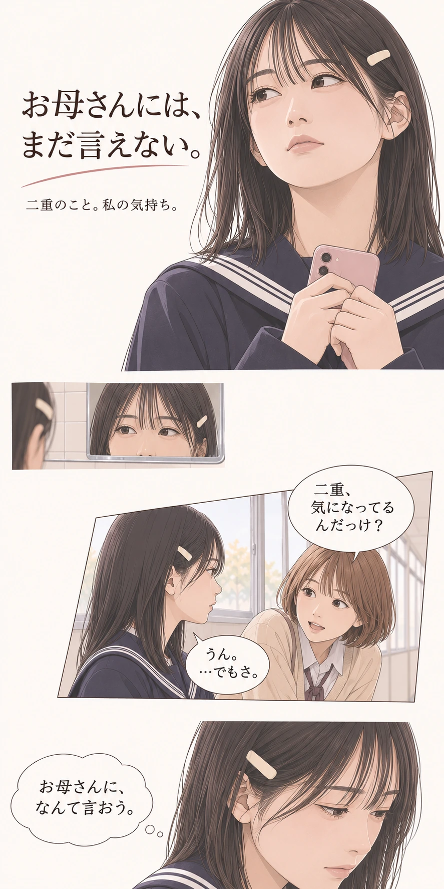
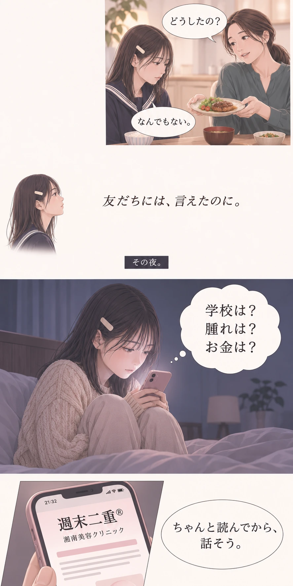
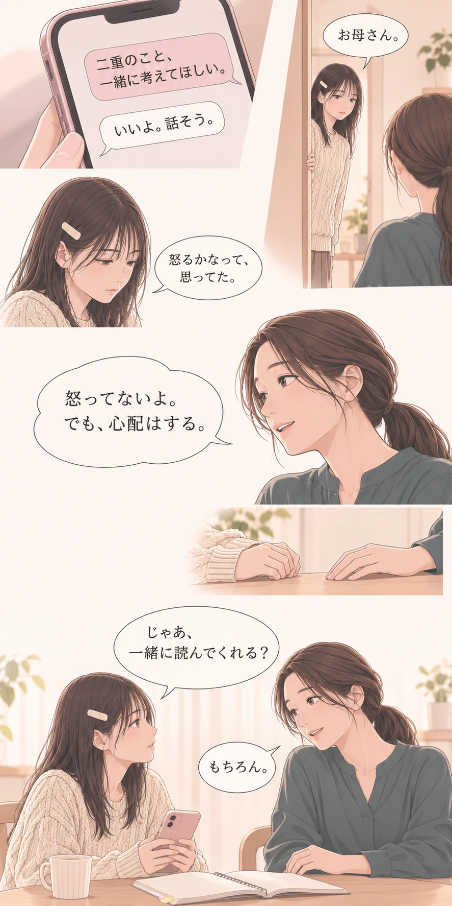
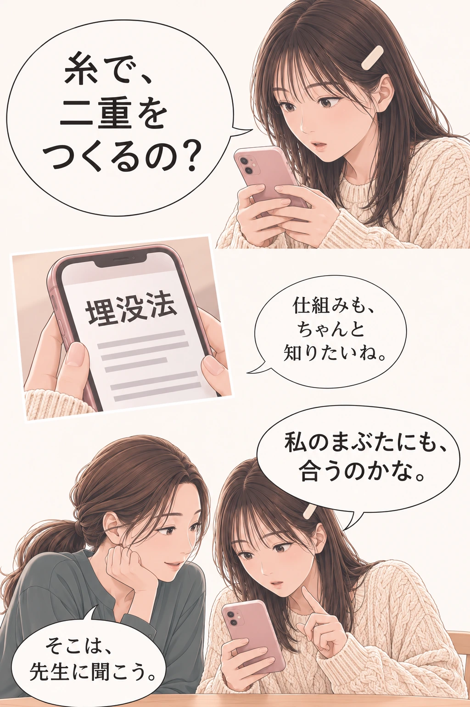
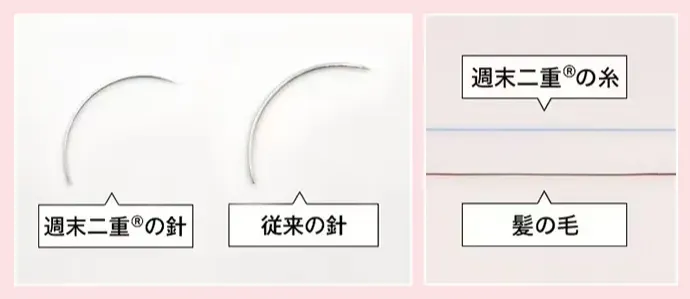
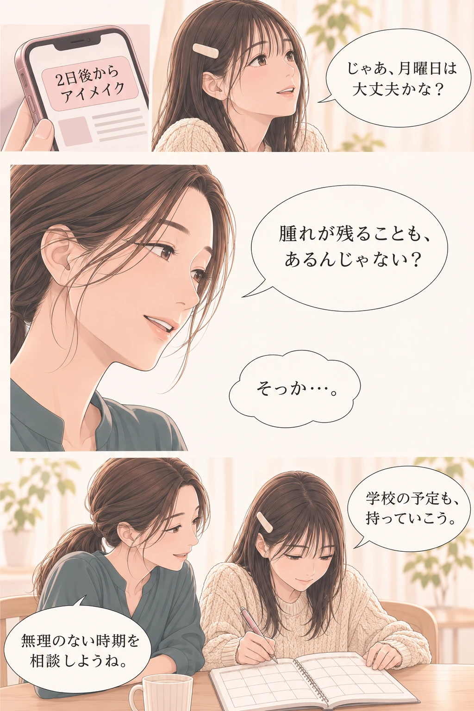
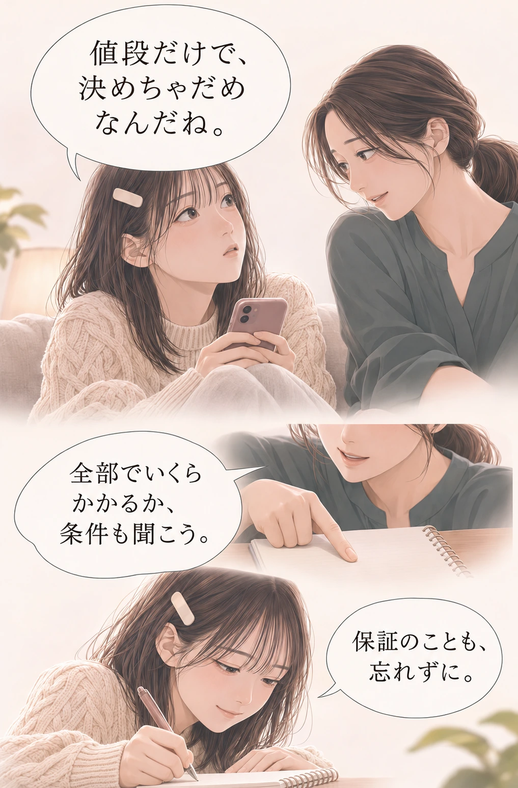
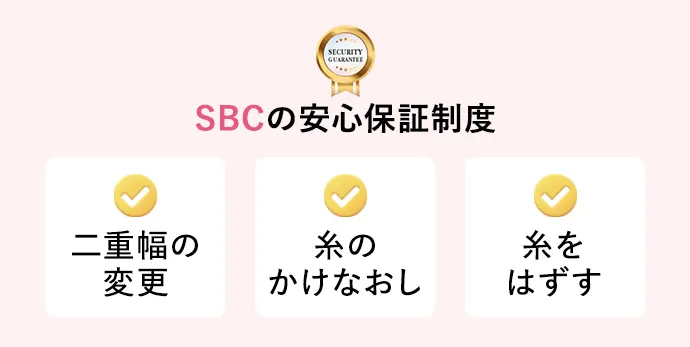
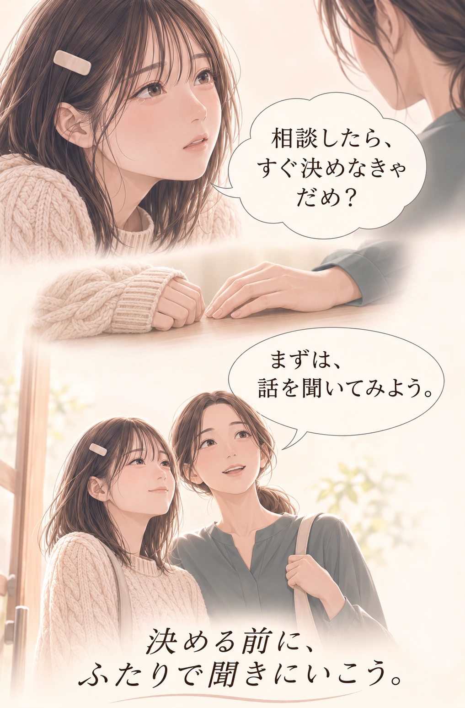

このマンガはフィクションです。実際の患者さまの体験談や施術結果を示すものではありません。
ふたりで読む、相談前のガイド
「週末二重®って、どんな施術？」
「学校の予定に、どう合わせる？」
気になったことは、相談用のメモへ。

週末二重®は、医療用の糸を使って二重を形成する埋没法です。湘南美容クリニックは、細い針と糸で腫れを抑える工夫をしています。

画像：公式記事より。施術の適応や可能なデザインは、診察で確認します。仕上がりには個人差があります。

公式記事では、施術2日後からアイメイクが可能と案内されています。ただし、メイクができる時期と、腫れが落ち着く時期は同じではありません。
腫れや内出血の程度・期間には個人差があります。「2日で必ず治まる」「周囲に気づかれない」という保証ではありません。
登校、部活、体育、行事の予定を伝えて、施術時期や過ごし方を医師に相談しましょう。
腫れ・内出血、目の違和感、左右差、希望と異なる幅、ラインの消失・乱れなどが生じることがあります。身体症状など、これ以外のリスクも含めて医師から説明を受けてください。
公式の施術説明・リスク表示を読む ↗
点数・プラン・キャンペーン・モニター条件によって料金が変わります。今の料金と、必要な総額を公式案内・カウンセリングで確認しましょう。
料金・キャンペーンは変更や終了の場合があります。適用条件を含む最新情報は、公式ページをご確認ください。
公式ページで料金・条件を確認する ↗
糸が取れた・ラインが薄くなった場合の同一幅でのかけ直しは3年間、幅の変更・糸を外す保証は1年間と案内されています。適用条件は必ず公式ページ・相談時に確認してください。
写真・動画の撮影や広告等での公開への協力が条件となり、適応審査があります。価格だけで判断せず、撮影・公開範囲も確認しましょう。
未成年の方の治療には、親権者の同意が必要です。公式案内では、カウンセリング当日の親権者の同伴と、ご本人・親権者それぞれの身分証明書の持参を求めています。
年齢・希望する施術によって条件が異なる場合があります。来院前にクリニックへ確認してください。

湘南美容クリニック · 週末二重®
無料カウンセリングで、
気持ちも不安も相談できます。
記事では、当日中に契約する必要はないと
案内されています。
公式サイトへ移動します。未成年の方は、保護者の方と来院条件をご確認ください。
参考にした記事を読む ↗